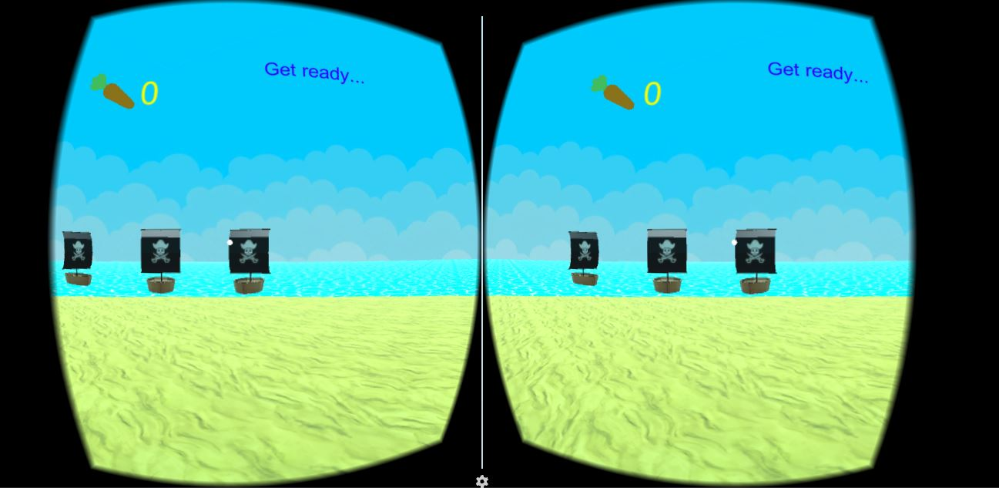
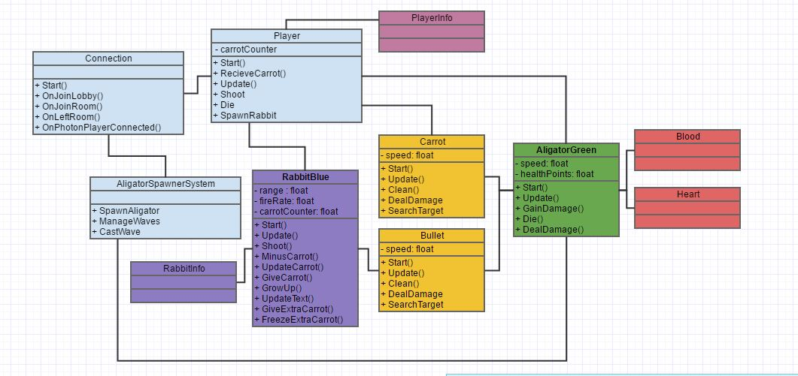
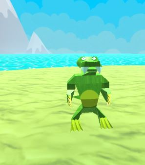
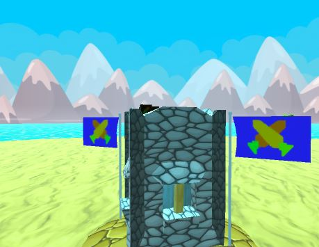

RABBITS Deffence
Концепція
Гра розроблена в стилі Tower Defence: в центрі поля - гравець, мета якого захистити свій замок від нападу ворогів, розставляючи різноманітні оборонні споруди. У грі доступний мультиплеєр - до чотирьох гравців можуть грати разом на одній стороні, захищаючись від ворожих атак. Усе реалізовано у віртуальній реальності (3D) на операційній системі Android. Контроль відбувається джойстиком та рухами голови гравця.
Події відбуваютсья посеред океану на одному із островів. З різних сторін за випадковим принципом з'являються вороги - алігатори - та йдуть до цетру острова, де знаходиться гравець. Гравець має можливість відстрілюватись знарядами - морквинами, які наносять шкоду алігаторам. Також він може розставляти союзників - зайців (за певну кількість морквин), які теж стріляють морквинами, однак з обмеженим запасом та радіусом дії. Для того щоб знищити ворога достатньо нанести йому три одиниці шкоди. Шкода від зайців еквівалентна шкоді від гравця. Стріляючи в зайця, гравець може поповнити його запас морквин. Зайці наділені "інтелектом" та автоматично відслідковують і стріляють у ворогів. У гравця теж є обмежений запас морквин, який поповнюється з часом. Гравець програє якщо за малий проміжок часу до вежі підходить велика кількість ворогів.
Інструменти
Гра розроблена на платформі Unity. Для адаптації під віртуальну реальність використовується Google VR SDK for Unity. Для реалізації мультиплеєру - Photon for Unity. 3D моделі розроблялись за допомогою Autodesk 3ds MAX. Текстури в Adobe Photoshop CS6. Мова програмування - С#, серидовище - Visual Studio.
Опис архітектури
Кожен з перелічених ігрових об'єктів має свою власну поведінку, описану за допомогою класів. В основі механіки зайців - пошук ворогів та вистріл. Усе відбувається в мультиплеєрі, тому потрібно долучити гравців до спільної ігрової кімнати, постійно передавати між собою інформацію про їхні дії і по максимуму обраховувати інформацію локально в пристроях, без застосування мережі. Це потрібно для оптимізації, щоб кожен із пристроїв виконував порівну роботи.
Підсумок
Загалом ми навчились елементам розробки ігор, 3D моделюванню, програмуванні на C#, використовуючи Unity Scripting API, вивчили велику кількість вбудованих та бібліотечних функцій, опанували процедурне та об'єктно-орієнтоване програмування на С#, зрозуміли багато аспектів мультиплеєрної гри: передавання інформації між гравцями, синхронізація, кімнати та лоббі, опитмізація обчислень. Отримали досвід створення своєї ігрової економіки та створення балансу в грі, командній роботі, task management'y, розподілу завдань. Знаємо та вміємо створювати ігри для Android на платформі Unity та перемикати на інші платформи. Створили свій тип даних, який дозволяє швидко обичлити доступні для спауну об'єктів кординати, та додавати туди нові координати. Освоїли головні концепції створення дотатків під віртуальну реальність та зрозуміли що ще є багато над чим працювати. За цей проміжок часу ми створли
майжеповноцінну гру у галузі, в якій зараз явно замало продуктів.
 
by Volodymyr Zabulskyy and Roman Vey, CS@UCU